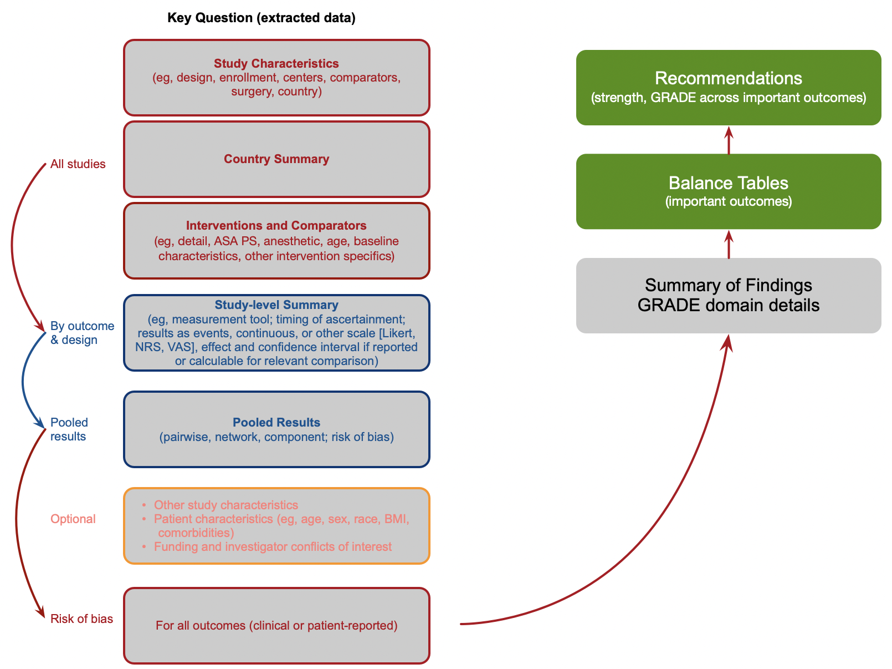
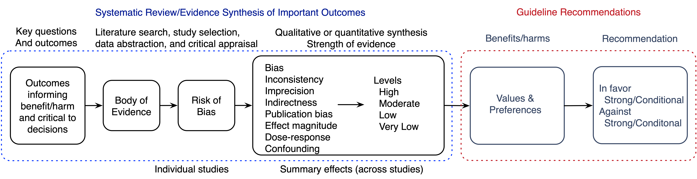
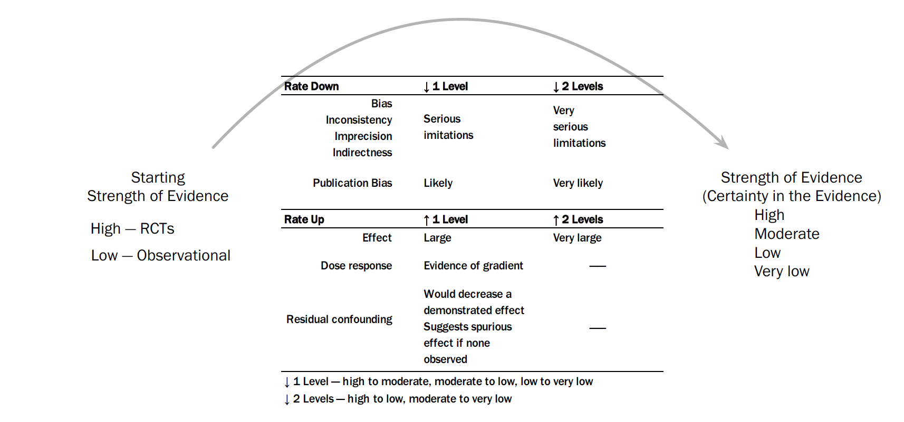

4 Evidence Synthesis
4.1 Introduction
A single study is rarely sufficient to inform a guideline or policy recommendation1 (Spiegelhalter et al., 2004, p. 267); a synthesis of evidence obtained from multiple studies is required. The evidence synthesis may be qualitative or quantitative ranging from narrative descriptions of study results to pairwise meta-analysis (a single intervention and comparator) or network meta-analysis (multiple interventions or comparators). Regardless of the approach, the purpose of an evidence synthesis is to summarize benefits, harms, and uncertainty (statistical and non-statistical) to inform decisions and recommendations.
Figure 4.1 depicts how the evidence synthesis is structured for each key question and how results support recommendations. The figure implicitly emphasizes how guideline users have varied needs with respect to detail. Some are interested only in recommendations that include no quantitative information. Many (hopefully most) seek to understand the the summaries detail in the balance tables. Accordingly, these elements are included in the body of the published guideline. Others may want to understand details including GRADE domains, meta-analyses, and how specifics of the synthesis supports recommendations — provided as supplementary materials (eg, see example). Finally, a rare individual may wish to explore analysis or reproduce them — data and code are made available for that purpose.
It should be noted that explanatory text in the guideline is by necessity more limited than a singular publication devoted to each key question. However, the degree of detail provided should be sufficient to allow a transparent view to the most discerning or critical reader.

4.2 Decision-Making Frameworks
The decision-making required to develop recommendations requires a framework or model — a calculus of benefits and harms, how they are valued, and their respective uncertainties. The explicitness of the decision calculus varies (Meltzer et al., 2011). For example, a model can be conceptual existing only in the mind of a decision maker with little or nothing quantitative. On the other extreme, the model can decision-analytic with explicit quantitative inputs and outputs. Like most guideline enterprises, the ASA adopts an approach with qualitative and quantitative elements between the extremes.
As outlined in Figure 4.2, after formulating key questions and important outcomes specified, relevant studies are identified, data extracted, and risk of bias appraised. Next, using a quantitative or qualitative synthesis, the strength (certainty/GRADE) of evidence for each outcome is rated. Outcomes are then weighted according to patient values and preferences, considered as a whole, and recommendations formulated.

But “all models are wrong” (Box, 1976) — including GRADE.
4.3 Quantitative Synthesis
Based on the key question, included studies, clinical and methodological diversity, results are pooled in either pairwise or network meta-analyses. Random effects models are fitted given the goal of estimating unconditional effects (ie, effects not relevant only to the pooled studies) (Hedges et al., 1998). For binomial outcomes, default models use the Mantel-Haenszel method; for continuous outcomes inverse variance weighting. The restricted maximum likelihood estimator is used to estimate between-study variance (Viechtbauer, 2005). For continuous or scale-reported outcomes, if means and standard deviations are unavailable for they are imputed if authors reported medians, interquartile and/or overall ranges for the effects of interest; and if necessary P-values are used to estimate missing standard deviations (Shi et al., 2020). When five or more studies are pooled, the Hartung-Knapp adjustment is applied (Cornell et al., 2014). Network meta-analyses are conducted using frequentist (Balduzzi et al., 2023) or Bayesian methods (Béliveau et al., 2019; Dias et al., 2018) with non-informative priors. Consistency is examined by comparing direct to indirect evidence in the frequentist network meta-analyses and inconsistency models in the Bayesian approach.
Relative effects as reported as risk ratios for clinical interpretability and continuous outcomes as mean differences or standardized mean differences for outcomes reported with differing scales. When feasible, standardized mean differences are re-expressed on the most common scale used. Statistical heterogeneity is examined using the between study variance and I \(^2\) (Rücker et al., 2008) and when relevant and practicable explored in subgroup analysis or meta-regression (Schwarzer et al., 2015; Simon G. Thompson et al., 2002) Small-study effects and the potential for publication bias are examined using funnel plots (comparison-adjusted for network meta-analyses), regression-based tests, and adjustment methods (Balduzzi et al., 2019; Harrer et al., 2021). Owing to its statistical properties, results using odds ratios are used reported for when examining small-study effects for relative effects; sensitivity analyses are performed using risk ratios.
Analyses are conducted using R (R Core Team, 2023) in a reproducible manner and made publicly available when the practice parameter is completed.
4.3.1 Combining
4.3.2 Harms/Adverse Events
Comparative harms are pooled as either relative or absolute effects according to the frequency of events. For rare events (eg, mortality) risk differences are most often used.
Absolute risk differences may be examined, typically for complications, but because event rates can vary across studies relative effects are the basis for assessing the strength of evidence.
4.3.3 Sensitivity Analyses
Although useful, meta-analytic results are not without limitations (Ioannidis, 2016; Maclure et al., 2001) The robustness of meta-analytic results requires consideration. Aspects include model decisions, small-study effects, influential studies and other factors (eg, secular trends, subgroups).
Modeling decisions include the choice of effect measure, estimators, use of Hartung-Knapp adjustment, continuity corrections for rare events, and even considering studies without events (can be important for harms). As relevant, particularly when uncertainty in a pooled effect appears unclear, how each of these choices impact the range of plausible effects may be examined.
Small-study effects are particularly important as they may represent publication bias or selective reporting and can affect the strength of evidence. There is, however, no test for publication bias or selective reporting. The presence of small-study effects offer clues to their potential presence, but require a sufficient number of studies (eg, 10 or more) to effectively examine. Additionally, there are multiple tests (Begg et al., 1994; Egger et al., 1997; Macaskill et al., 2001; Peters et al., 2006; Pustejovsky et al., 2019; Sterne et al., 2011; S. G. Thompson et al., 1999) and adjustment methods — trim and fill (Duval et al., 2000), PET-PEESE (Stanley et al., 2014), limit meta-analyis (Rücker et al., 2011), P-curves (Simonsohn et al., 2014), and selection models (Copas et al., 2014) that can utilized — sometimes offering conflicting results.
We adopt a pragmatic approach to sensitivity analyses. If a pooled result is obtained from 10 or more studies, the most appropriate choice of a regression-based test is reported. But if more than one could be used and results differ both are noted. For adjustment, a limit meta-analysis is our method of choice superimposed on a funnel plot (others may be used as sensitivity checks). Although the Hartung-Knapp adjustment is applied given 5 or more studies, we recognize that published meta-analyses typically do not. It is therefore important to understand sensitivity of results to its use and note in the interpretation of evidence and GRADEing.
Finally, despite the wide range of analytic choices our perspective is that a convincing body of evidence should not be materially impacted for a strong recommendation. If it is, then consideration must be incorporated in both rating the strength of evidence and recommendation.
4.4 Rating the Strength of Evidence
The strength (certainty) of evidence for important outcomes is appraised using the Grades of Recommendation, Assessment, Development, and Evaluation (GRADE Schünemann et al., 2013) and American College of Cardiology/American Heart Association (ACC/AHA Halperin et al., 2016) frameworks.
Different conceptual models (Spiegelhalter et al., 2011) underpin these strength of evidence frameworks — certainty of evidence (GRADE) and evidence hierarchy (ACC/AHA). The longstanding evidence hierarchy (pyramid) model asserts that systematic reviews and meta-analyses of randomized clinical trials provide the most convincing evidence followed by randomized clinical trials, observational studies, and case series or case reports. The certainty of evidence model incorporates the hierarchy insofar as it reflects study validity, but defines the strength of evidence in terms of how convinced reviewers are that estimates are close to some “true effect”.
4.4.1 GRADE
| GRADE | Definition |
|---|---|
| High | We are very confident that the true effect lies close to that of the estimate of the effect. |
| Moderate | We are moderately confident in the effect estimate: The true effect is likely to be close to the estimate of the effect, but there is a possibility that it is substantially different. |
| Low | Our confidence in the effect estimate is limited: The true effect may be substantially different from the estimate of the effect. |
| Very low | We have very little confidence in the effect estimate: The true effect is likely to be substantially different from the estimate of effect. |
In the GRADE approach, a strength of evidence is determined using an algorithm that includes limitations in the body of evidence (bias, inconsistency, imprecision, indirectness, publication bias) and factors that can increase confidence in effects2 (large or very large effect magnitude, dose-response, and plausible residual confounding). According to study limitations, the strength of evidence may be rated down 1 or 2 levels according to study limitations from a starting rating of high for RCTs. Evidence from observational studies begin with a low rating and may be rated down for limitations or rated up because of effect magnitude, dose-response, or the impact of plausible residual confounding. GRADE guidance for rating the certainty of evidence up or down is followed, with some additions. Inconsistency (unexplained heterogeneity) of pooled effects is judged by examining heterogeneity based on the between-study variance \(\tau^2\) and prediction intervals. (Borenstein, 2023) Owing to its well-described limitations, I \(^2\) and some categorization of it’s magnitude (eg, small, moderate, or large), is not used as a determinant of heterogeneity (Rücker et al., 2008). Note also that \(\tau^2\) and I \(^2\) vary by effect (associational) measures (eg, risk versus odds ratios and mean versus standardized mean differences).

4.4.1.1 Strength of Evidence Network Meta-analyses
There different approaches to assessing whether evidence from network meta-analyses is convincing including GRADE, (Brignardello-Petersen et al., 2018, 2021; Brignardello-Petersen, Murad, et al., 2019; Brignardello-Petersen, Mustafa, et al., 2019; Hao et al., 2023) CINeMA, (Nikolakopoulou et al., 2020; Papakonstantinou et al., 2020) and threshold analysis (Phillippo et al., 2019). A concise summary of using each in developing recommendations can be found in Welton et al (Welton et al., 2020) (from the NICE Decision Support Unit). We use CINeMA following as a coherent and practicable approach.3
4.4.1.2 Note on Nonrandomized Designs, ROBINS-I, and GRADE
In 2019, the GRADE working group offered “guidance regarding how systematic review authors, guideline developers, and health technology assessment practitioners using GRADE might approach the use of ROBINS-I as part of the certainty rating process” (Schünemann et al., 2019). They suggested owing to differences in the ROBINS-I tool (referent to trial emulation) that when it is used, the GRADE for a body of evidence from non-randomized designs should start at high, not low strength of evidence. Although a rationale is offered, our view is that this guidance is not appropriate (potential for additional down GRADEing due to confounding and selection bias). No matter how careful the conduct and analysis of a non-randomized study, the assumption of no unmeasured confounding is unverifiable (Schulz et al., 2023) (in stark contrast to randomized designs). On this basis, it is logically inconsistent to equate randomized and non-randomized designs. Additionally, the guidance introduces dependence of GRADE on the risk of bias tool — absent in its original formulation. We choose to review carefully our appraisals of nonrandomized evidence to avoid overzealous down GRADEing, but retain GRADE in its original formulation.
4.4.1.3 Other particulars regarding application of GRADE domain ratings and summary
Inconsistency:
When there is a single study inconsistency is rated very serious and for 2 studies serious. The rationale is that at least 3 studies are required to begin to assess the direction of effect. This rule can be modified for large multi-center studies.
Prediction intervals are used to assess inconsistency. I 2 values are included in forest plots as part of the evidence synthesis.
If randomized and nonrandomized results are combined (eg, for harms) the body of evidence is treated as observational beginning at a low GRADE.
A result described as inconclusive is intended to convey that, in our judgment, the confidence interval allows concluding either comparator was clinically meaningfully superior.
A result described as favoring neither comparator reflects that the range of effects was judged to exclude a clinically meaningful difference.
4.4.2 ACC/AHA
| Level | Definition |
|---|---|
| A | High-quality evidence from more than 1 RCTs. Meta-analyses of high-quality RCTs. One or more RCTs corroborated by high-quality registry studies. |
| B-R | Moderate-quality evidence from 1 or more randomized controlled trials. Meta-analyses of moderate-quality RCTs. |
| B-NR | Moderate-quality evidence from 1 or more well-designed, well-executed nonrandomized studies, observational studies, or registry studies. Meta-analyses of such studies. |
| C-LD | Randomized or nonrandomized observational or registry studies with limitations of design or execution. Meta-analyses of such studies. Physiological or mechanistic studies in human subjects. |
| C-EO | Consensus of expert opinion based on clinical experience when evidence is insufficient, vague, or conflicting. |
RCT: randomized clinical trial; NR: nonrandomized; LD: limited data; EO: expert opinion
ACC/AHA ratings are based on an evidence hierarchy approach. Its 5-level scheme (A, B-R, B-NR, C-LD, C-EO) considers study design (RCT, observational, mechanistic) and quality, number of studies, meta-analytic results, expert opinion and clinical experience (Table 4.2). The framework explicitly allows for consideration of mechanistic studies conducted in humans (Goodman et al., 2013). Unlike GRADE guidance for arriving at a strength of evidence is limited to the level of evidence definitions. The ratings were recently revised from an A, B, C scheme by expanding B and C into 2 subcategories and adding E for expert opinion (Jacobs et al., 2014).
| Date | Modifications | Version | Note |
|---|---|---|---|
| 2023-09-11 | None | 0.1 | Initial version |
| 2024-02-15 | Notes concerning GRADE | Updated | |
| Network strength of evidence. | Updated |
“It is unusual for a policy question to be informed by a single study.”↩︎
Applies primarily to evidence obtained from observational studies.↩︎
Welton et al note, “In comparison to GRADE-NMA, which is non-sensical, the methodology [CINeMA] is rigorous, easier and less time-consuming to use, and cannot produce incoherent conclusions.”↩︎
4.4.1.4 Comment on GRADE
GRADE is complex. The web-based handbook spans over 40,000 words and there are now over 30 explanatory publications. The 4-level quality of evidence ratings imposes cutoffs for what is in reality a continuous scale — ratings near the cutoffs are less certain than might be evident. We sometimes struggle assigning a GRADE. Accordingly, the categorical GRADE (high, moderate, low, very low) reflects in effect the mode of a distribution. Uncertainty is not conveyed — for example (Llewellyn et al., 2015; Stewart et al., 2015).